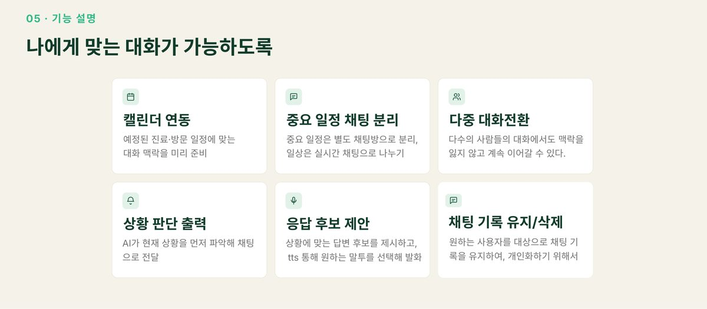
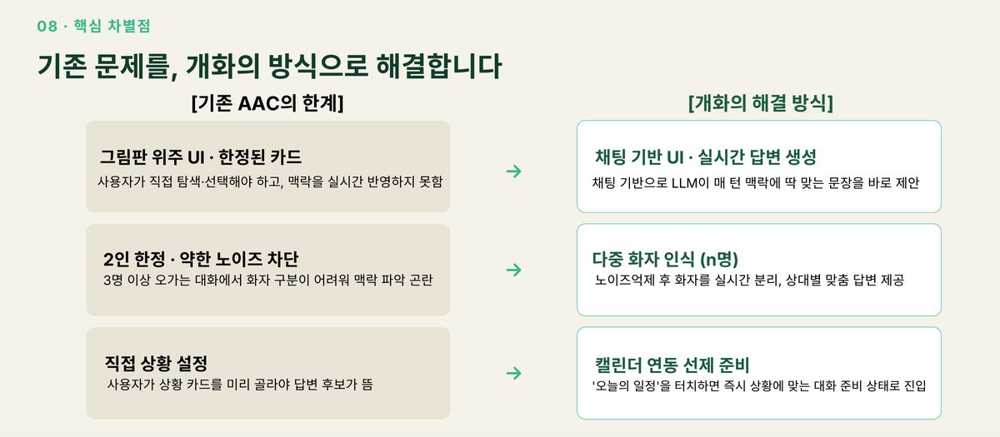

개화 — 소통 약자를 위한 AAC 서비스
본인의 어투로 완성된 문장을 대신 말해주는, 상황 인식 기반 발화보조 서비스
723,605명국내 소통 약자 (2023 장애인실태조사)
62%완전한 의사소통 실패율
3명자체 FGI 반구조화 인터뷰
배경 🌱
국내 소통 약자는 72만 명이고, 상대방이 본인의 의사를 모두 이해했다고 응답한 '완전한 의사소통'의 실패율은 62%입니다. 말하고 듣는 데는 어려움이 없지만 표현·전달 수단이 제약된 사람들입니다.
문제 정의 🤔
기존 AAC(보완대체의사소통)는 정적인 대화에 머물러 있었습니다. 자체 FGI에서 확인한 것은 세 가지 — 준비한 문장과 다른 질문이 나오면 처음부터 다시 입력해야 하고(상황 대응 실패), 대답을 고르는 동안 대화는 다음 주제로 넘어가 있으며(흐름 단절), 3명 이상 대화에서는 화자 구분이 안 돼 맥락을 잃습니다(다인 대화).
결과 화면 🖼



데이터 📦
자체 FGI
소통 약자 3명(24 · 37 · 49세) 반구조화 인터뷰, 2026.07
실태 통계
보건복지부 2023년 장애인실태조사, KOSIS 국가통계포털
맥락 입력
캘린더 일정과 사전 등록 정보를 파이프라인 전 과정에 주입
접근 🛠
- 그림판 UI 대신 채팅 기반 UI로 바꿔, LLM이 매 턴 맥락에 맞는 문장을 바로 제안하게 했습니다.
- 노이즈를 억제한 뒤 화자를 실시간 분리해 3명 이상 대화에서도 상대별 맞춤 답변을 제공했습니다.
- 캘린더를 연동해 예정된 진료·방문 일정에 맞는 대화 맥락을 미리 준비했습니다.
- AI가 현재 상황을 먼저 파악해 채팅으로 알려주고, 응답 후보를 제시한 뒤 원하는 말투를 골라 TTS로 발화하게 했습니다.
설계 결정과 근거 ⚖️
타깃을 '도움을 받아 참여하는 사람'이 아니라 '대화의 흐름을 함께 만드는 사람'으로 다시 정의했다
배려받는 참여자가 아니라 동등한 위치의 대화자로 설계 관점을 바꾸자, 필요한 기능이 '표현 보조'에서 '속도 회복'으로 바뀌었습니다.
상황 카드를 직접 고르게 하지 않았다
기존 AAC는 사용자가 상황을 미리 선택해야 답변 후보가 뜹니다. 캘린더의 '오늘의 일정'을 터치하면 즉시 상황에 맞는 준비 상태로 진입하도록 바꿨습니다.
결과 📈
상황 인지 → 맥락 이해 → 답변 생성으로 이어지는 파이프라인과 채팅 기반 MVP를 구현하고 라이브 데모로 시연했습니다.
한계 🔍
이 결과가 틀렸을 수 있는 지점입니다.
- 수상하지 못했습니다. 다만 실사용자 FGI를 직접 진행해 문제를 정의한 경험이 남았습니다.
- 다중 화자 인식은 데모 환경 기준이라 실제 소음 환경에서의 성능은 검증하지 못했습니다.
금융 직무와의 연결 🎯
사용자 정의와 서비스 설계
이 프로젝트에서 얻은 역량이 금융 직무에서 어떻게 쓰이는지
- 실사용자 조사 기반 설계 — FGI로 문제를 직접 정의하고 그로부터 기능을 도출했습니다.
- 접근성 관점 — 금융 서비스의 디지털 취약계층 대응과 맞닿아 있는 문제의식입니다.
회고 💡
사용자를 어떻게 부르느냐가 설계를 바꾼다는 걸 배웠습니다. '도움받는 사람'에서 '대화를 함께 만드는 사람'으로 정의를 바꾸자 만들어야 할 기능이 달라졌습니다.